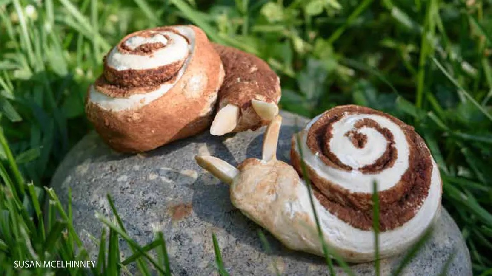
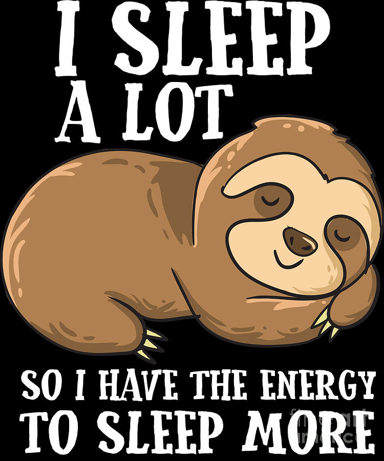

Fun Facts and Phrases from Learning German
Menu
Iteration: My first ever webpage
I find a lot of the words in German to be very quaint, funny, entertaining, or enlightening. These moments make my eyes sparkle, and are the reason I've continued to learn German for 2 years now. On this webpage, I'll keep a list of the words, phrases, and ideas that have brought me joy.
Animals, bugs, and other living things
- die Zimmtschnecke
- das Faultier
- das Stinktier
Cinnamon rolls are called cinnamon snails
Check out this website for how to make some snail shaped Zimmtschnecken!
The sloth is called the lazy animal
The skunk is called the stinky animal
Mundane, but OMG that makes so much sense!
- die Inhalte
- der Ratschlag
- die Fachleute
Contents are called in-holds, because the contents are what is held inside.
A piece of advice is an advice blow. Schlag means blow or hit or punch. It's the same word that is used for drums. It makes me think about all the times we get advice that we don't really want to hear.
Specialists are called subject people. Fach means subject like a subject in school, and Leute means people.
Same as in English, I just never thought about it in English
- die Mikrowelle
Just like in English micro(tiny) wave(like the ocean or sound or light) We name the kitchen appliance that makes our food hot after the tiny electromagnetic waves that it emits. Duh, why did I never realize that?